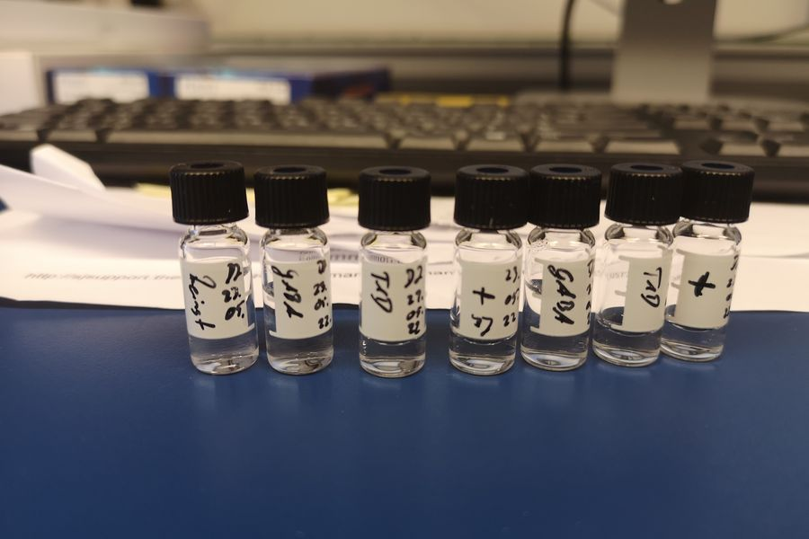
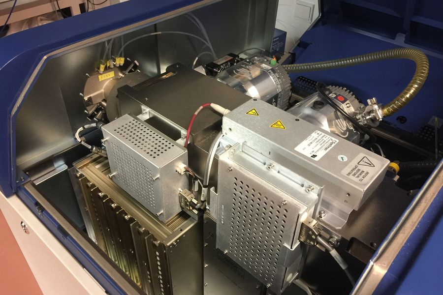
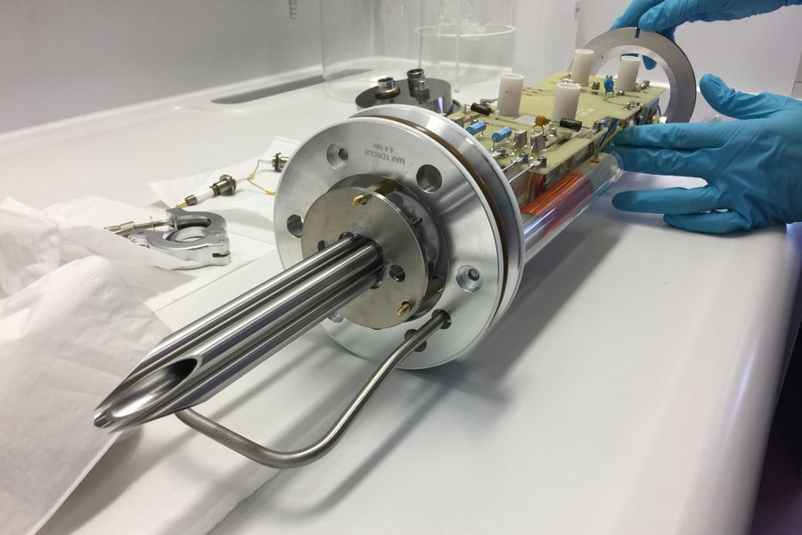

Ich habe im Labor geforscht. Jetzt unterrichte ich Naturwissenschaften.
Biologie · Chemie · Physik · NW
| Fächer | Biologie, Chemie, Physik, NW |
|---|---|
| An dieser Schule seit | April 2025 |
| Studiert in | Bremerhaven |
| Wollte werden | Meeresbiologe |
| Lieblingsgerät | Massenspektrometer |
| Kann außerdem | Programmieren, Singen, Theater |
| 2019 | Bachelor Maritime Technologien, Vertiefung Biotechnologie |
| 2023 | Master Biotechnologie, Bremerhaven |
| 2025 | Erste eigene Stunde als Lehrer |
| 2026 | Ausbildung zum Lehrer begonnen |

Selbst beschriftet, selbst gemessen. GABA, T1D, Mai 2022.

Es wiegt einzelne Moleküle. Damit habe ich GABA gesucht.
Ein Forschungsschiff des AWI. Auf der war ich unterwegs.

Geräte gehen im Labor dauernd kaputt. Reparieren gehört dazu.
Diese Messung gehört zu meiner Masterarbeit. Ich wollte Menschen mit Typ-1-Diabetes mehr Lebensqualität verschaffen.
Ich möchte jeden mit auf die Reise in die Naturwissenschaft nehmen.
Fehler sind Daten, keine Niederlagen.
Wir prüfen nach, statt zu glauben.
Ich forsche lieber gemeinsam mit euch als allein im Labor.
Analytik: Ich habe gemessen, was in Stoffen wirklich drinsteckt.
Ja. Wir entwickelten eine Messmethode für gepresste Knochenreste in Wurst.
Ja. Eine Messmethode für Augentropfen aus Blut, gegen trockene Augen. Dafür gibt es sogar ein Patent.
Nein. Wir werteten Daten von Hand in großen Excel-Listen aus. Das wollte ich eleganter lösen.
Biochemie. Das ist die Chemie in jedem Lebewesen.
Ja. Abitur 1,7 und eine Auszeichnung fürs Theaterspielen.
Ich singe, programmiere und zocke.
Kontakt: d.jaksch@schulen.bremerhaven.de